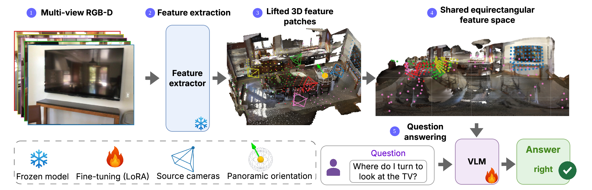
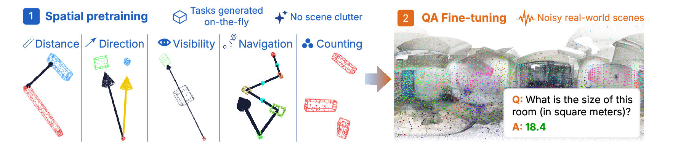
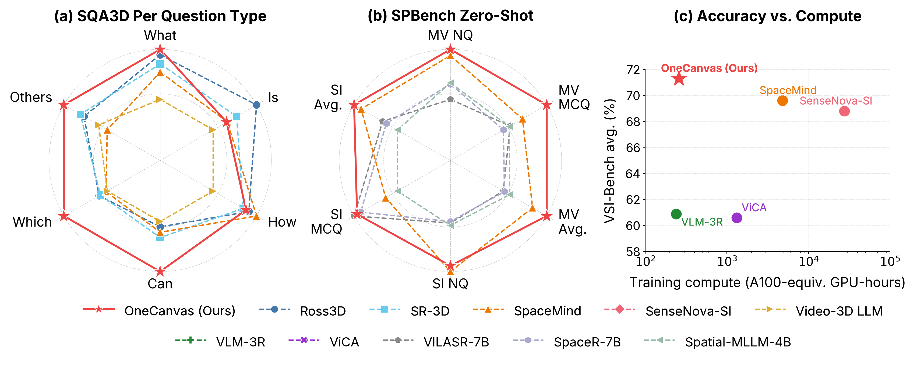

Existing approaches to 3D scene understanding in Vision-Language Models (VLMs) either rely on complex, model-specific geometry encoders or large training budgets in pursuit of spatial reasoning. Instead, OneCanvas aggregates patch features from all views onto a single equirectangular panoramic canvas. Each patch is unprojected to a 3D world coordinate using its depth and camera pose, then placed on the canvas at the continuous longitude and latitude of that point as seen from the canvas origin, with no rasterization onto a pixel grid and no aggregation across views.
A 3D position embedding of the patch's metric coordinates is added to its feature, restoring the depth lost when collapsing the world position to an angular canvas coordinate. Patches from all frames thus share one spatial coordinate system with no fusion or major architectural modifications of the backbone. The pretrained VLM consumes this representation as if it were an ordinary image. Because the canvas can be centered on any pose of interest, the same representation directly supports situated reasoning from a specific viewpoint, a common requirement in robotics and embodied AI.
Thanks to this representation, we can also introduce a spatial pretraining curriculum: by procedurally placing patch features of objects, drawn from real images, at chosen 3D world positions on an otherwise empty canvas, we generate on-the-fly supervision spanning a broad range of spatial reasoning tasks, with answer distributions controlled to reduce spatial reasoning shortcuts. OneCanvas achieves state-of-the-art accuracy on SQA3D and VSI-Bench, and generalizes to out-of-distribution data on SPBench, using an order of magnitude less training compute than the strongest competing methods, SpaceMind and SenseNova-SI.

Feature extraction and 3D lifting. Each input image is passed through the frozen vision encoder of a pretrained VLM to obtain per-patch features. Each patch is unprojected to world coordinates using its metric depth and the camera-to-world pose.
Panoramic canvas. Each lifted patch is placed on the canvas at the continuous longitude and latitude of its 3D position as seen from a chosen origin. Positions are continuous, so every patch becomes its own token rather than being rasterized onto a shared pixel grid and collapsed by a hand-designed reduction rule. The VLM then consumes the canvas through its native attention layers, with each patch's spherical coordinates on the spatial position axes and its source-frame index on the temporal axis.
Pick a situated question to fly the canvas-origin globe to that viewpoint. Every lifted patch feature reprojects onto the globe along a spoke colored by its source camera, and the strip below shows the same reprojection unrolled into the equirectangular canvas the VLM actually consumes. Drag to orbit.
Equirectangular canvas from the current viewpoint. Forward is centered (green crosshair). Dots are lifted patch features colored by source camera.

Stage 1: spatial pretraining. A LoRA adapter and the 3D position embedding are trained on an on-the-fly curriculum of spatial reasoning tasks. Each sample places real-image patch features at procedurally chosen 3D positions on an otherwise empty canvas. With appearance decoupled from size and location, geometry on the canvas is the only signal that can solve the task.
Stage 2: target adaptation. The stage-1 adapter is merged back into the base language model, and a fresh, lower-rank adapter is trained on a mixture of downstream spatial question answering. The merged stage-1 update anchors the geometric reading while the smaller stage-2 adapter handles answer-format adaptation.

OneCanvas reaches state of the art on three spatial reasoning benchmarks: SQA3D (65.3 EM@1, 2.3 points above the previous best), VSI-Bench (71.3 average), and SPBench (72.1 zero-shot overall, 4.8 points above the next best method), while using an order of magnitude less training compute than the strongest competing methods, SpaceMind and SenseNova-SI.
65.3
EM@1
+2.3 over prev. SOTA
71.3
Average
+12.3 on route planning
72.1
Zero-shot overall
+4.8 over prev. SOTA
@misc{baranowski2026onecanvas,
title = {OneCanvas: 3D Scene Understanding via Panoramic Reprojection},
author = {Baranowski, Bart{\l}omiej and Chen, Dave Zhenyu and Nie{\ss}ner, Matthias},
year = {2026},
eprint = {2606.19253},
archivePrefix = {arXiv},
primaryClass = {cs.CV}
}